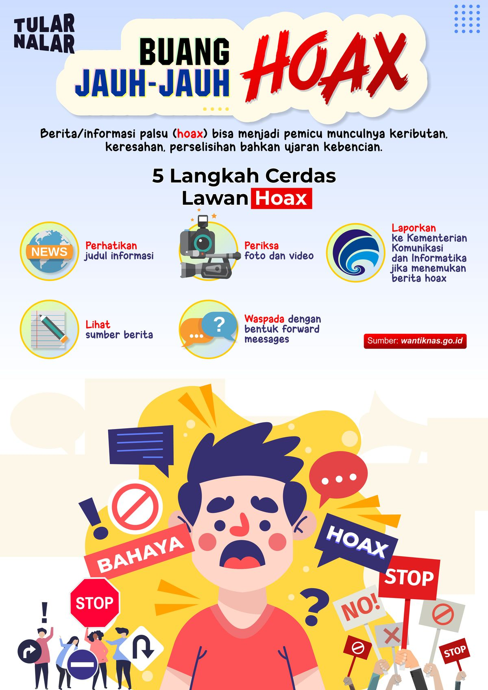

A. Hakikat Eksistensial Manusia
Secara ontologis, hakikat manusia dalam agama tidak hanya dipandang sebagai makhluk biologis yang lahir, tumbuh, dan mati. Agama menempatkan manusia sebagai entitas dualistik yang memiliki komponen materi (jasmani) dan non-materi (ruh/jiwa). Kesempurnaan manusia justru terletak pada kemampuannya menyelaraskan kedua elemen ini di bawah bimbingan akal dan wahyu.
Dalam konteks teologis, manusia memikul amanah sebagai Khalifah fil Ardh (pengelola bumi). Tugas ini menuntut integritas moral yang tinggi. Manusia dibekali dengan kehendak bebas (free will), namun kebebasan tersebut dibatasi oleh tanggung jawab moral kepada Sang Pencipta dan sesama makhluk.
B. Dinamika Etika dan Perilaku
Agama berfungsi sebagai kompas moral yang mendefinisikan batasan antara perilaku yang memanusiakan manusia (inklusif, kasih sayang, jujur) dan perilaku yang mendegradasi martabat kemanusiaan. Ketika manusia melepaskan diri dari nilai-nilai agama, sering kali terjadi disorientasi perilaku yang berujung pada koflik personal maupun sosial.
Studi Kasus: HOAX di Media Sosial
Fenomena: Mengumbar kebencian dan berita bohong ke masyarakat.

Gambar 1: Tangkapan layar perilaku menyimpang di media sosial.
Perilaku perundungan di media sosial merupakan bentuk pengingkaran terhadap hakikat manusia sebagai makhluk mulia. Dalam agama, lisan dan tangan seseorang seharusnya menjadi sumber keselamatan bagi orang lain. Fenomena ini menunjukkan bahwa teknologi berkembang lebih cepat daripada kematangan spiritual. Seseorang yang merasa anonim di dunia maya cenderung kehilangan empati, yang merupakan inti dari ajaran agama. Tanpa pondasi spiritual, manusia terjebak dalam egoisme yang merusak tatanan harmoni sosial.
- Nasr, S. H. (1997). Man and Nature: The Spiritual Crisis of Modern Man. Kazi Publications.
- Al-Attas, S. M. N. (1995). Prolegomena to the Metaphysics of Islam. ISTAC.
- Kementerian Agama RI. (2019). Moderasi Beragama. Jakarta: Badan Litbang dan Diklat.